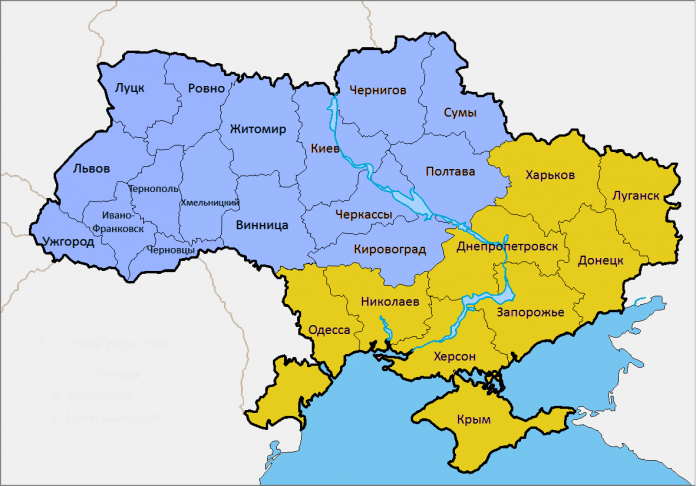

Добрый день,Александр
Отправляю тебе письмо,в котором хочу рассказать:
Скользя по утреннему снегу,
Друг милый, предадимся бегу
Нетерпеливого коня
И навестим поля пустые ,
Леса , недавно столь густые ,
И берег , милый для меня.
1829
А.С.Пушкин. Сочинения в трех томах
Санкт-Петербург:Золотой век,Диамант,1997
Для любого натурального числа n>2 уравнение
an +bn=cnне имеет натуральных решений a,b и c
C#(произноситься си-шарп)-обьектно-ориентированный язык программированияф. Разработан в 1998-2001 годах группой инженеров под руководством Андерса Хейлсберга в компании Microsoft как язык разработки приложений для платформы Microsoft .NET Framework и впоследствии был стандартизирован.
C# относиться к семье языков с С-подобным синтаксисом, из них его синтаксис наиболее близок к С++ и Java. Язык имеет статическую типизацию,поддерживает полиморфизм,перегрузку операторов (в том числе операторов явного и неявного приведения типа),делегаты, атрибуты,события,свойства,обобщенные типы и методы,итераторы,"анонимные" функции с поддержкой замыканий,LINQ, исключения,комментарии формате ХML.
| HEADER | HEADER | HEADER | HEADER | |
|---|---|---|---|---|
| You can span down | You can span across | |||
| Its like a puzzle | Over here | |||
| This way | That way | |||
| Where am I ? |
||||